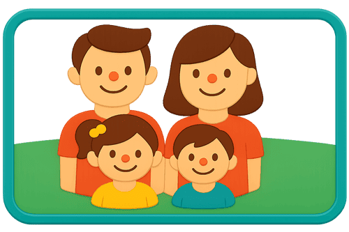
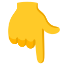
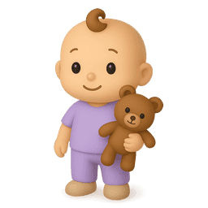
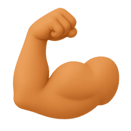
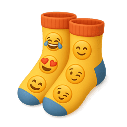
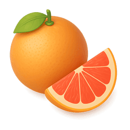
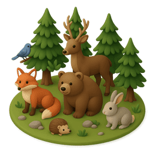
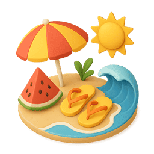
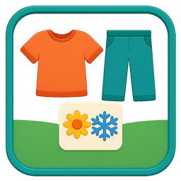

Treinar a Memória de Partes do Corpo (com som)

Treinar a Memória de Hábitos Saudáveis (com som)

Treinar a Memória da Roupa (com som)

Treinar a Memória dos Alimentos (com som)

Treinar a Memória (com som):

